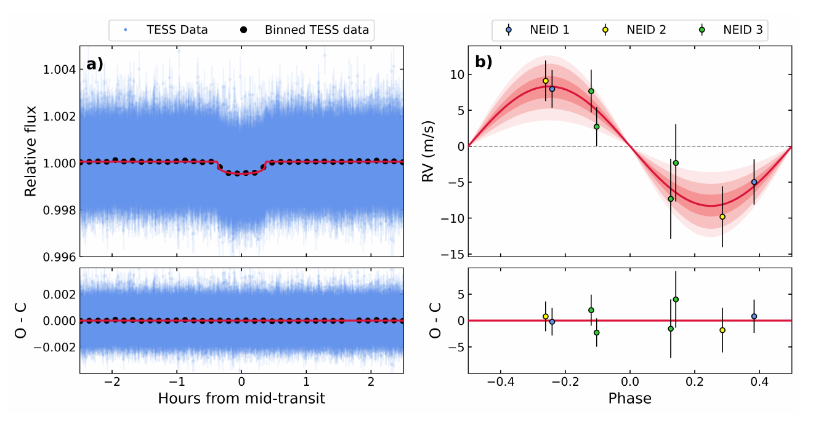
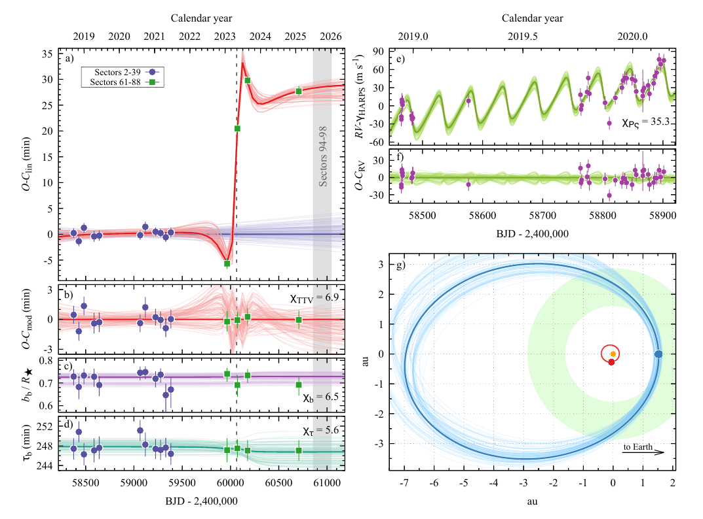
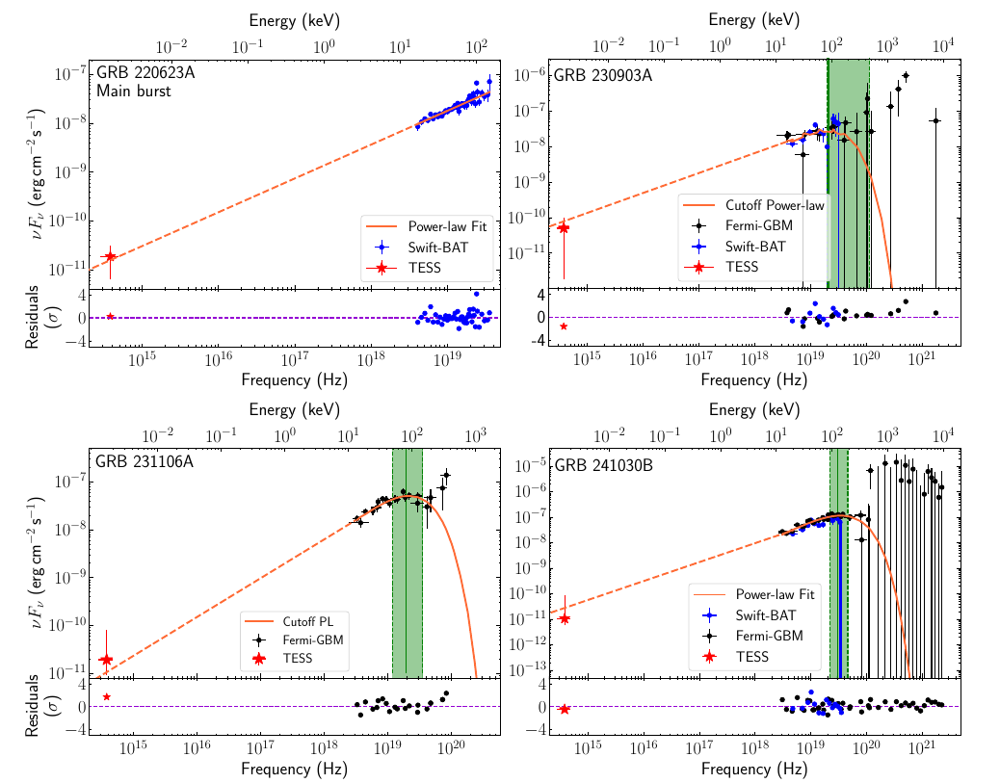

Welcome TESS followers to our latest news bulletin!
This week, we are looking at three recent papers from the archive. Enjoy!
First, we highlight the discovery and confirmation of TOI-2431 b, a small planet with an orbital period of only 5.4 hours. Such planets represent some of the more extreme planetary systems in the Galaxy and provide unique laboratories for studying planetary formation, evolution, and atmospheric physics. These relatively rare worlds experience intense stellar radiation and tidal forces that can fundamentally alter their structure and composition, making them critical for understanding planetary survival mechanisms and the boundaries of habitability.
Next, we outline a paper reporting the discovery of TOI-201 c, a long-period transiting exoplanet detected through transit timing variations (TTVs). The detection represents a rare observational sequence where the presence of a distant companion was first suggested from its gravitational influence on the inner planet TOI-201 b, and subsequently confirmed through direct transit observation by TESS. The discovery of TOI-201 c provides new insights into planetary system architecture, formation mechanisms, and long-term dynamical evolution in multi-planet systems.
The third paper presents broad-band analysis of gamma-ray bursts observed by TESS. Gamma-ray bursts are among the most energetic events in the Universe, producing intense flashes of high-energy radiation that can be detected across cosmic distances. Understanding the relationship between their optical emission and high-energy gamma-ray emission provides crucial insights into the physical mechanisms driving these explosive phenomena. The simultaneous observation of both optical and gamma-ray emission from gamma-ray bursts is rare, making such studies particularly valuable.
An Earth-Sized Planet in a 5.4h Orbit Around a Nearby K dwarf (Tas et al. 2025) :
Tas et al. (2025) present the discovery and characterization of TOI-2431 b, an Earth-sized planet orbiting a nearby K dwarf star located approximately 36 parsecs away. The planet completes one orbit around its host star in just 5 hours and 22 minutes, representing the sixth shortest-period exoplanet known, and the shortest-period planet with mass and radius constrained to better than 3-sigma. TESS observed the target at 2-min cadence in Sectors 31, 42, 43, 70, and 71. Combining data from TESS with precise radial velocity observations from the NEID and HPF spectrographs, the authors determined that TOI-2431 b has a radius of ~1.5 REarth and a mass of ~6.2 MEarth. The corresponding bulk density of 9.4 grams per cubic centimeter indicates a composition denser than Earth, potentially consistent with a rocky, Earth-like interior structure. The host star TOI-2431 is a relatively inactive K7V dwarf with an effective temperature of ~4110 K and a mass of 0.67 MSun. Tas et al. (2025) obtained high-contrast imaging observations to rule out the presence of nearby stellar companions that could contaminate the measurements, and noted that the star's high proper motion (~385 mas/yr) provided additional confirmation that background stars are not affecting the planetary signal. The authors found evidence of excess scatter in their radial velocity measurements beyond what would be expected from the known planet, suggesting the possible presence of additional non-transiting planets in the system that require further observations to confirm. Given its extremely close proximity to its host star (~0.006 AU), TOI-2431 b receives intense stellar radiation that results in an equilibrium temperature of ~2060 K, hot enough to melt most silicate minerals and suggesting the planet's surface is likely partially or fully molten. Tas et al. (2025) estimate that the planet's current orbital period is only about 30 percent larger than the theoretical Roche limit, the minimum distance from the host star at which it can maintain structural integrity. The authors argue that due to its proximity to the Roche limit, TOI-2431 b likely experiences significant tidal deformation, and estimate that the planet is stretched into an ellipsoidal shape where the shortest axis is approximately 9 percent shorter than the longest axis. Additionally, Tas et al. (2025) note that the intense tidal interactions are causing the planet's orbit to decay at a rapid rate, with models predicting that it will reach the Roche limit in about 31 million years, making it one of the most rapidly decaying planetary systems known. Given the relatively short timescale, at least compared to other systems, the authors point out that the orbital decay could potentially be detected through long-term precision timing observations. Thanks to TESS, Tas et al. (2025) were able to discover and characterize in detail the ultra-short orbital period planet TOI-2431 b, a rare planet in a sparsely populated parameter space, and an excellent target for future atmospheric observations with the JWST with an Emission Spectroscopy Metric score of 27.
A Transiting Giant on a 7.7-Year Orbit Revealed by TTVs in the TOI-201 System (Maciejewski et al. 2025) :
Maciejewski et al. (2025) present the detection and characterization of the long-period transiting planet TOI-201 c. The TOI-201 system now contains two confirmed planets, orbiting an F6-7 main sequence host. The previously-known inner planet, TOI-201 b, is a warm Jupiter with a mass of ~0.6 Jupiter masses and a radius of ~1.1 Jupiter radii, following an eccentric orbit with a 53-day period. TESS observed the target at 2- min cadence in Cycles 1, 3, and 5, for a total of 32 sectors of data; transits of TOI-201 b were detected in 15 sectors. The authors performed a detailed transit-timing variations analysis of TOI-201 b using all available data and noticed that while transits from Cycle 2-39 follow a linear ephemeris, those in later sectors do not, instead exhibiting clear deviations from linear ephemeris reaching up to 30 min. Maciejewski et al. (2025) argue that these anomalies were too large to be attributed to systematic effects or measurement errors, and strongly suggested gravitational perturbations from an unseen companion. Applying a two-planet dynamical model to the available photometric and spectroscopic data, the authors were able to extract the signal of the outer planet TOI-201 c, a super-Jupiter with a mass of about 14 Jupiter masses, placing it near the boundary between massive planets and brown dwarfs. Critically, the outer planet produced a transit in Sector 64, confirming the model. According to their best-fit solution, TOI-201 c follows a highly eccentric orbit with an eccentricity of ~0.6 and an orbital period of 7.7 years, making it one of the longest-period transiting planets discovered by TESS. The authors note that the outer planet's extreme eccentricity brings it as close as ~1.5 astronomical units to its host star at periastron, despite having a semi-major axis of 4.3 astronomical units. Maciejewski et al. (2025) demonstrate that the two planets maintain a nearly coplanar configuration with a mutual orbital inclination of just 2.9 degrees, suggesting they formed and evolved within the same disk. Long-term numerical simulations extending over 800 million years confirm the system's dynamical stability for the duration of the integrations. Additionally, the authors note that the gravitational interactions between the planets cause secular oscillations in TOI-201 b's orbital elements, with its eccentricity varying between ~0.1 and ~0.3 over approximately 25,000-year cycles and its inclination cycling between ~87 and ~93 degrees over roughly 21,000 years. These orbital variations indicate that transits of TOI-201 b will cease after ~1,000 years due to secular changes in its orbital inclination, only to resume about 6,000 years later. In contrast, Maciejewski et al. (2025) find that TOI-201 c maintains transit visibility throughout its secular cycle. Utilizing data from TESS, including the detection of a predicted transit, the authors discovered and characterized in detail the giant planet TOI-201 c, the longest-period transiting planet discovered from TESS at ~7.7 years.
Broad-band Spectral Modeling of Prompt Emission from Gamma-Ray Bursts Observed by the Transiting Exoplanet Survey Satellite (Jayaraman et al. 2025) :
Jayaraman et al. (2025) present a detailed analysis of 24 precisely-located gamma-ray bursts that occurred within the field of view of TESS between July 2018 and December 2024. The authors used phenomenological models to fit the spectral energy distributions from gamma-ray through optical wavelengths, comparing high-energy extrapolations with observed optical fluxes. Of the 24 bursts studied, only a small fraction showed optical emission consistent with simple extrapolations from high energies. The author’s results reveal a striking variety in the relationship between optical and gamma-ray emission. In four cases, the extrapolation of the high-energy spectral energy distribution agreed with the observed optical flux within one standard deviation, suggesting a direct connection between the emission mechanisms. In contrast, one burst showed a significant excess of optical flux relative to the high-energy extrapolation, possibly indicating contributions from reverse shock emission or other additional components. For two bursts, the upper limits obtained from TESS observations could not constrain the optical emission. Jayaraman et al. (2025) report that the remaining 17 bursts exhibited optical flux that was substantially lower than predicted by extrapolating from high energies, with discrepancies often exceeding several orders of magnitude. The authors argue that dust extinction in the host galaxies provides a plausible explanation for this suppression. Jayaraman et al. (2025) calculated upper limits on extinction values, finding hydrogen column densities consistent with typical galaxy sight lines, with some bursts requiring more substantial extinction. For the burst with excess optical emission GRB 200412B, the measured flux exceeded the high-energy extrapolation by more than an order of magnitude. This burst also exhibited a late-time flare approximately 20,000 seconds after the initial trigger, which the authors attribute to late-time central engine activity. Overall, the analysis of Jayaraman et al. (2025) revealed that most bursts could be well-described by either power-law or the Band function. Two bursts in the authors’ sample were also detected by Fermi-LAT at very high energies, providing additional constraints on the spectral models. Jayaraman et al. (2025) demonstrated that the continuous monitoring capabilities and large field of view of TESS make it well-suited for detecting prompt optical emission from gamma-ray bursts, thus providing new insights into the variety of GRB emission mechanisms and highlighting the importance of dust extinction in interpreting multi-wavelength observations of these cosmic explosions.

Fig. 1: Taken from Tas et al. (2025). Left panel: Phase-folded TESS lightcurve along with the corresponding best-fit model and residuals. Right panel: NEID radial velocity measurements.

Fig. 2: Taken from Maciejewski et al. (2025). Left panels: Transit-timing variations of the known planet TOI-201 b, indicating the presence of the newly-discovered outer planet TOi-201 c, along with the best-fit model. Upper right: Corresponding radial velocity measurements from HARPS and model. Lower right: Configuration of the system as seen from above.

Fig. 3: Taken from Jayaraman et al. (2025). Broad-band SEDs for prompt emission and flares for 4 gamma-ray bursts where the extrapolation from the high-energy regime is consistent with the optical observations from TESS. The green vertical bands represent the 1-sigma uncertainty of the cut-off energy for the cut-off energy power-law model.